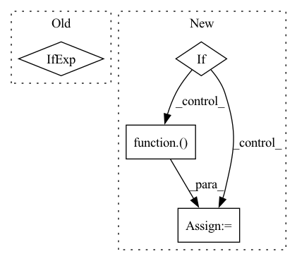

Pattern ID :26103
Before Change
def mhsa_with_multi_head_relative_position_embedding(
inputs, num_heads=4, key_dim=0, global_query=None, out_shape=None, out_weight=True, qkv_bias=False, out_bias=False, attn_dropout=0, name=None
):
channel_axis = -1 if image_data_format() == "channels_last" else 1
input_channel = inputs.shape[channel_axis]
height, width = inputs.shape[1:-1] if image_data_format() == "channels_last" else inputs.shape[2:]
After Change
blocks = height * width
// Permute for conv if given data_format not matching actual image_data_format
if image_data_format() == "channels_last" and data_format == "channels_first":
inputs = layers.Permute([2, 3, 1])( inputs)
elif image_data_format() == "channels_first" and data_format == "channels_last":
inputs = layers.Permute([3, 1, 2])(inputs)
conv_channel_axis = -1 if image_data_format() == "channels_last" else 1
In pattern: SUPERPATTERN
Frequency: 4
Non-data size: 4
Instances Fragment ID: 78696499
Project Name: leondgarse/keras_cv_attention_models
Commit Name: 2ba27b0132168f3590dd4b3bead9edc15a70ba7d
Time: 2023-02-11
Author: leondgarse@gmail.com
File Name: keras_cv_attention_models/coatnet/coatnet.py
M Class Name: AnonimousClass
N Class Name: AnonimousClass
M Method Name: mhsa_with_multi_head_relative_position_embedding(11)
N Method Name: mhsa_with_multi_head_relative_position_embedding(10)
M Parent Class:
N Parent Class:
M File Name: keras_cv_attention_models/coatnet/coatnet.py
N File Name: keras_cv_attention_models/coatnet/coatnet.py
M Start Line: 25
M End Line: 57
N Start Line: 32
N End Line: 74
Before Change
// some of the encoder model doesnt output the pooler output. It has to be made from hidden state
//ouputs in those cases
sequenceOutput = outputs[0]
pooledOutput = outputs[1] if len(outputs) >1 else self.make_pooler_output(sequenceOutput)
taskType = self.taskParams.taskTypeMap[self.taskParams.taskIdNameMap[taskId]]
if taskType == TaskType.Span:After Change
// some of the encoder model doesnt output the pooler output. It has to be made from hidden state
//ouputs in those cases
sequenceOutput = outputs[0]
if len(outputs) > 1:
pooledOutput = outputs[1]
else:
pooledOutput = nn.ReLU()( self.poolerLayer(sequenceOutput[:, 0]))
//pooledOutput = outputs[1] if len(outputs) >1 else self.make_pooler_output(sequenceOutput)
taskType = self.taskParams.taskTypeMap[self.taskParams.taskIdNameMap[taskId]] Fragment ID: 78696500
Project Name: hellohaptik/multi-task-nlp
Commit Name: 434af597e1f2dd437d60e963d98b9db78222fcdf
Time: 2020-04-20
Author: mehtasaransh614@gmail.com
File Name: models/model.py
M Class Name: multiTaskNetwork
N Class Name: multiTaskNetwork
M Method Name: forward(5)
N Method Name: forward(5)
M Parent Class: nn.Module
N Parent Class: nn.Module
M File Name: models/model.py
N File Name: models/model.py
M Start Line: 107
M End Line: 108
N Start Line: 100
N End Line: 108
Before Change
inputs, num_heads=8, key_dim=0, block_size=4, halo_size=1, strides=1, out_shape=None, out_weight=True, out_bias=False, attn_dropout=0, name=None
):
_, hh, ww, cc = inputs.shape
key_dim = key_dim if key_dim > 0 else cc // num_heads
qk_scale = 1.0 / tf.math.sqrt(tf.cast(key_dim, inputs.dtype))
out_shape = cc if out_shape is None else out_shape
emb_dim = num_heads * key_dimAfter Change
attention_output = tf.reshape(attention_output, [-1, hh_aa * query_block, ww_aa * query_block, heads * cc_aa])
// print(f">>>> {attention_output.shape = }, {attention_scores.shape = }")
if avg_pool_down:
attention_output = keras.layers.AvgPool2D(2, strides=2, name=name and name + "avg_pool")( attention_output)
if out_weight:
// [batch, hh, ww, num_heads * out_dim] * [out, out] --> [batch, hh, ww, out]
attention_output = keras.layers.Dense(out_shape, use_bias=out_bias, name=name and name + "output")(attention_output)
return attention_output Fragment ID: 78696501
Project Name: leondgarse/keras_cv_attention_models
Commit Name: b2f98d2080335a72694923a6a2ac0cbea346c788
Time: 2021-10-22
Author: leondgarse@gmail.com
File Name: keras_cv_attention_models/halonet/halonet.py
M Class Name: AnonimousClass
N Class Name: AnonimousClass
M Method Name: halo_attention(11)
N Method Name: halo_attention(11)
M Parent Class:
N Parent Class:
M File Name: keras_cv_attention_models/halonet/halonet.py
N File Name: keras_cv_attention_models/halonet/halonet.py
M Start Line: 20
M End Line: 25
N Start Line: 21
N End Line: 94
Before Change
waveform, sample_rate = torchaudio.load(self.wavs[idx])
if self.transforms:
waveform = self.transforms(waveform)
return (waveform, sample_rate) if self.with_sample_rate else waveform
def __len__(self) -> int:
return len(self.wavs)After Change
if self.transforms:
waveform = self.transforms(waveform)
if self.sample_rate and sample_rate != self.sample_rate:
waveform = torchaudio.transforms.Resample(
orig_freq=sample_rate, new_freq=self.sample_rate
)( waveform)
return waveform
def __len__(self) -> int: Fragment ID: 78696504
Project Name: archinetai/audio-data-pytorch
Commit Name: fbe09328921a6eb23886535defa33ca79a590b8f
Time: 2022-09-04
Author: flavio.schneider.97@gmail.com
File Name: audio_data_pytorch/datasets/wav_dataset.py
M Class Name: WAVDataset
N Class Name: WAVDataset
M Method Name: __getitem__(2)
N Method Name: __getitem__(2)
M Parent Class: Dataset
N Parent Class: Dataset
M File Name: audio_data_pytorch/datasets/wav_dataset.py
N File Name: audio_data_pytorch/datasets/wav_dataset.py
M Start Line: 39
M End Line: 39
N Start Line: 42
N End Line: 47